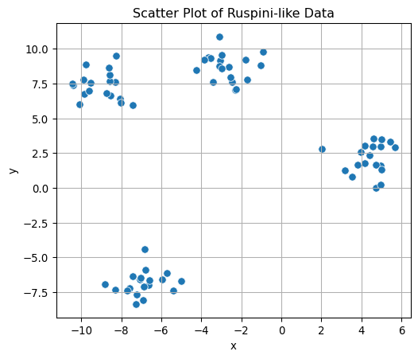
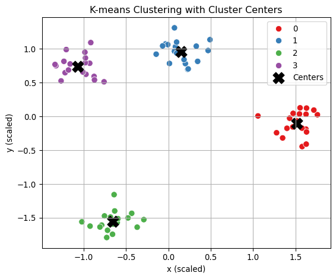
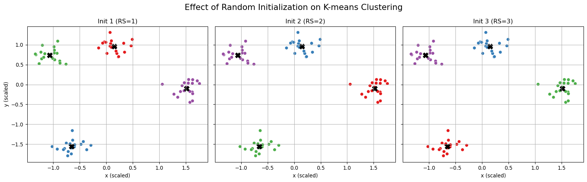
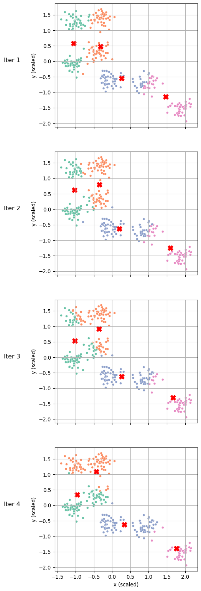

import numpy as np
import pandas as pd
import matplotlib.pyplot as plt
import seaborn as sns11 K-means
WVU BUDA 450
11.1 Overview
Cluster analysis (or clustering) is the task of grouping a set of data objects in such a way that objects in the same group (cluster) are more similar to each other than to those in other groups (clusters), and aims to directly learns the structure of the data without external information (e.g., target labels) as a unsupervised data mining task. K-means clustering is a partition based clustering technique.
“This section introduces K-means clustering as a partition based clustering technique. The implemention of k-means is discussed with general scatter plots and arranged plots for efficient visualization. Examples in this section demostrate the effect of random initialization on clustering outcomes, the iterative process of K-means, and the clustering for new data.”
11.1.1 Packages for this class
clusterfor example dataggplotandfactoextrafor visualization of clusteringpatchworkfor arranging mulitple plots
11.2 Data Preparation
For this section, we will use a toy dataset. This dataset contains 75 observations that form four well-separated clusters, making it ideal for testing clustering algorithms.
Step 1: Simulate or Load Dataset
from sklearn.datasets import make_blobs
# Generate synthetic data similar to R's ruspini
X, _ = make_blobs(n_samples=75, centers=4, cluster_std=1.0, random_state=42)
df = pd.DataFrame(X, columns=['x', 'y'])
# Preview the data
df.head()
df.describe()| x | y | |
|---|---|---|
| count | 75.000000 | 75.000000 |
| mean | -3.484217 | 2.762365 |
| std | 5.239377 | 6.231662 |
| min | -10.445811 | -8.343625 |
| 25% | -7.856466 | -2.215633 |
| 50% | -4.234115 | 3.537813 |
| 75% | 0.545074 | 7.795279 |
| max | 5.670878 | 10.866564 |
Step 2: Visualize the Dataset We can visualize the two-dimensional data to inspect its structure and confirm the presence of visible clusters.
# Scatter plot of the generated data
plt.figure(figsize=(6, 5))
sns.scatterplot(data=df, x='x', y='y', s=50)
plt.title("Scatter Plot of Ruspini-like Data")
plt.xlabel("x")
plt.ylabel("y")
plt.grid(True)
plt.show()
11.2.1 Scale the Data
For clustering tasks, standardizing the variables helps prevent those with larger scales from dominating the distance calculations. While the ruspini dataset has roughly balanced variable scales, it’s still a good practice to normalize the data for consistent results.
For a good clustering result, it is essential to avoid an adverse effect[^inst2] from the distances calculated with dominating variables of larger scales. It may not be a severe issue for ruspini data, where the value ranges of the variables are not extremely different. Nonetheless, it would be recommendable to consider a normalization to ensure the proper data quality. In this example, let’s consider the standardization..
from sklearn.preprocessing import StandardScaler
# Standardize the data
scaler = StandardScaler()
df_scaled = scaler.fit_transform(df)
df_scaled = pd.DataFrame(scaler.fit_transform(df.values), columns=df.columns, index=df.index)
# Summary statistics after scaling
df_scaled.describe()| x | y | |
|---|---|---|
| count | 7.500000e+01 | 7.500000e+01 |
| mean | 1.450691e-16 | -1.421085e-16 |
| std | 1.006734e+00 | 1.006734e+00 |
| min | -1.337654e+00 | -1.794189e+00 |
| 25% | -8.401175e-01 | -8.042028e-01 |
| 50% | -1.440913e-01 | 1.252748e-01 |
| 75% | 7.742190e-01 | 8.130745e-01 |
| max | 1.759130e+00 | 1.309245e+00 |
11.3 K-means Clustering
k-means is one of the most widely used unsupervised machine learning algorithms.
In Python, it is implemented in scikit-learn via the KMeans class.
To use the algorithm, you need to specify two main inputs:
- The dataset to be clustered, and
- The number of clusters (centers), K.
Let’s run K-means on the processed dataset with K = 4 clusters:
from sklearn.cluster import KMeans
dat = df.to_numpy()
# Set number of clusters
K = 4
kmeans_model = KMeans(n_clusters=K, random_state=2024)
res_km = kmeans_model.fit(dat)
res_kmC:\Users\saaan\anaconda3\envs\buda_py311\Lib\site-packages\joblib\externals\loky\backend\context.py:136: UserWarning:
Could not find the number of physical cores for the following reason:
[WinError 2] The system cannot find the file specified
Returning the number of logical cores instead. You can silence this warning by setting LOKY_MAX_CPU_COUNT to the number of cores you want to use.
File "C:\Users\saaan\anaconda3\envs\buda_py311\Lib\site-packages\joblib\externals\loky\backend\context.py", line 257, in _count_physical_cores
cpu_info = subprocess.run(
^^^^^^^^^^^^^^^
File "C:\Users\saaan\anaconda3\envs\buda_py311\Lib\subprocess.py", line 548, in run
with Popen(*popenargs, **kwargs) as process:
^^^^^^^^^^^^^^^^^^^^^^^^^^^
File "C:\Users\saaan\anaconda3\envs\buda_py311\Lib\subprocess.py", line 1026, in __init__
self._execute_child(args, executable, preexec_fn, close_fds,
File "C:\Users\saaan\anaconda3\envs\buda_py311\Lib\subprocess.py", line 1538, in _execute_child
hp, ht, pid, tid = _winapi.CreateProcess(executable, args,
^^^^^^^^^^^^^^^^^^^^^^^^^^^^^^^^^^^^^^^
C:\Users\saaan\anaconda3\envs\buda_py311\Lib\site-packages\sklearn\cluster\_kmeans.py:1419: UserWarning:
KMeans is known to have a memory leak on Windows with MKL, when there are less chunks than available threads. You can avoid it by setting the environment variable OMP_NUM_THREADS=1.
KMeans(n_clusters=4, random_state=2024)In a Jupyter environment, please rerun this cell to show the HTML representation or trust the notebook.
On GitHub, the HTML representation is unable to render, please try loading this page with nbviewer.org.
KMeans(n_clusters=4, random_state=2024)
Note
How to turn off the warning
11.3.1 Cluster Summary Information
The KMeans object in scikit-learn stores several useful attributes after fitting.
The k-means clustering algorithm assigns the first three users to one cluster and the last three users to the second cluster. The results are consistent with our expectation. We can also display the centroid for each of the two clusters.
# Cluster centers
centers = res_km.cluster_centers_
pd.DataFrame(
centers,
columns=df.columns, #['x-axis', 'y-axis'],
index=['cluster'+str(k) for k in range(K)]
)| x | y | |
|---|---|---|
| cluster0 | 4.416525 | 2.116662 |
| cluster1 | -2.709697 | 8.671982 |
| cluster2 | -6.898534 | -6.847019 |
| cluster3 | -9.037435 | 7.349250 |
# Cluster assignment for each data point
labels = res_km.labels_
df['cluster'] = labels
df| x | y | cluster | |
|---|---|---|---|
| 0 | -8.545255 | 6.609171 | 3 |
| 1 | 5.670878 | 2.904450 | 0 |
| 2 | -8.316386 | 7.620508 | 3 |
| 3 | -3.660191 | 9.389984 | 1 |
| 4 | -8.251471 | 9.513979 | 3 |
| ... | ... | ... | ... |
| 70 | -9.828864 | 6.757225 | 3 |
| 71 | 2.020134 | 2.795072 | 0 |
| 72 | -6.819397 | -4.416867 | 2 |
| 73 | -9.621581 | 7.001461 | 3 |
| 74 | -1.770731 | 9.185654 | 1 |
75 rows × 3 columns
# Number of points in each cluster
df['cluster'].value_counts()cluster
0 19
1 19
2 19
3 18
Name: count, dtype: int64While scikit-learn doesn’t directly expose totss and betweenss, we can approximate them:
# Total sum of squares (TSS)
overall_mean = np.mean(dat, axis=0)
totss = np.sum((dat - overall_mean) ** 2)
# Within-cluster sum of squares (WSS) = inertia (sum of squared distances to the nearest cluster center)
withinss = res_km.inertia_
# Between-cluster sum of squares (BSS)
betweenss = totss - withinss
# Print metrics
print(f"Total Sum of Squares (TSS): {totss:.2f}")
print(f"Total Within-cluster SS (WSS): {withinss:.2f}")
print(f"Between-cluster SS (BSS): {betweenss:.2f}")Total Sum of Squares (TSS): 4905.07
Total Within-cluster SS (WSS): 126.43
Between-cluster SS (BSS): 4778.64This provides a comprehensive summary of the clustering result, similar to what you’d get from R’s kmeans() output.
# Generate and scale data
X, _ = make_blobs(n_samples=75, centers=4, cluster_std=1.0, random_state=42)
scaler = StandardScaler()
dat = scaler.fit_transform(X)
# Run K-means
K = 4
res_km = KMeans(n_clusters=K, random_state=2024).fit(dat)
# Prepare data for plotting
clustered_df = pd.DataFrame(dat, columns=['x', 'y'])
clustered_df['Cluster'] = res_km.labels_
centers = res_km.cluster_centers_
# Visualization similar to fviz_cluster
plt.figure(figsize=(6, 5))
sns.scatterplot(data=clustered_df, x='x', y='y', hue='Cluster', palette='Set1', s=60)
plt.scatter(centers[:, 0], centers[:, 1], c='black', marker='X', s=200, label='Centers')
plt.title("K-means Clustering with Cluster Centers")
plt.xlabel("x (scaled)")
plt.ylabel("y (scaled)")
plt.legend()
plt.grid(True)
plt.tight_layout()
plt.show()C:\Users\saaan\anaconda3\envs\buda_py311\Lib\site-packages\sklearn\cluster\_kmeans.py:1419: UserWarning:
KMeans is known to have a memory leak on Windows with MKL, when there are less chunks than available threads. You can avoid it by setting the environment variable OMP_NUM_THREADS=1.

11.3.2 Initialization
11.3.2.1 Initialization with Random Centers
check https://scikit-learn.org/stable/modules/generated/sklearn.cluster.KMeans.html
By default, the initial cluster centers in KMeans are selected AUTO @@@@@@@@@@@@@@@@@@@@@@@@@@@@@randomly. As a result, the clustering results can vary across runs with identical data and parameters.
Below, we run K-means four times with different random seeds:
from sklearn.cluster import KMeans
# Run KMeans multiple times with different random states
#km1 = KMeans(n_clusters=4, init='random', n_init=1, random_state=1).fit(dat)
km1 = KMeans(n_clusters=4, n_init=1).fit(dat)
km2 = KMeans(n_clusters=4, n_init=1).fit(dat)
km3 = KMeans(n_clusters=4, n_init=1).fit(dat)C:\Users\saaan\anaconda3\envs\buda_py311\Lib\site-packages\sklearn\cluster\_kmeans.py:1419: UserWarning:
KMeans is known to have a memory leak on Windows with MKL, when there are less chunks than available threads. You can avoid it by setting the environment variable OMP_NUM_THREADS=1.
C:\Users\saaan\anaconda3\envs\buda_py311\Lib\site-packages\sklearn\cluster\_kmeans.py:1419: UserWarning:
KMeans is known to have a memory leak on Windows with MKL, when there are less chunks than available threads. You can avoid it by setting the environment variable OMP_NUM_THREADS=1.
C:\Users\saaan\anaconda3\envs\buda_py311\Lib\site-packages\sklearn\cluster\_kmeans.py:1419: UserWarning:
KMeans is known to have a memory leak on Windows with MKL, when there are less chunks than available threads. You can avoid it by setting the environment variable OMP_NUM_THREADS=1.
(based on random_state)
To better illustrate the impact of different initializations, we can visualize all four clustering results side-by-side:
import matplotlib.pyplot as plt
import seaborn as sns
# Set up plotting
fig, axes = plt.subplots(1, 3, figsize=(16, 5), sharex=True, sharey=True)
titles = ["Init 1 (RS=1)", "Init 2 (RS=2)", "Init 3 (RS=3)"]
clusterings = [km1, km2, km3]
# Plot each result
for ax, km, title in zip(axes, clusterings, titles):
sns.scatterplot(x=dat[:, 0], y=dat[:, 1], hue=km.labels_, palette='Set1', s=40, ax=ax, legend=False)
ax.scatter(km.cluster_centers_[:, 0], km.cluster_centers_[:, 1], c='black', marker='X', s=100)
ax.set_title(title)
ax.set_xlabel("x (scaled)")
ax.set_ylabel("y (scaled)")
ax.grid(True)
fig.suptitle("Effect of Random Initialization on K-means Clustering", fontsize=16)
plt.tight_layout()
plt.show()
11.3.2.2 Initialization with Predefined Centers
To avoid random variation, a fixed set of initial centers can be supplied. The shape of the array must match the number of clusters and feature dimensions:
# 4-by-2 array of initial centers
initial_centers = np.array([
[-1.0, 1.0],
[-0.5, 1.0],
[ 0.5, 1.0],
[ 1.0, 1.0]
])
# Fit K-means using predefined centers
km_fixed = KMeans(n_clusters=4, init=initial_centers, n_init=1)
res_km_fixed = km_fixed.fit(dat)
res_km_fixed.cluster_centers_C:\Users\saaan\anaconda3\envs\buda_py311\Lib\site-packages\sklearn\cluster\_kmeans.py:1419: UserWarning:
KMeans is known to have a memory leak on Windows with MKL, when there are less chunks than available threads. You can avoid it by setting the environment variable OMP_NUM_THREADS=1.
array([[-1.0670381 , 0.7410179 ],
[-0.65605317, -1.55240989],
[ 0.14882218, 0.95470719],
[ 1.51810919, -0.10431426]])11.3.2.3 Initilization with Algorithm (K-means++)
Alternatively, a smarter initialization method such as k-means++, which is the default in scikit-learn, can be used to improve stability and clustering quality. Such method determines the initial centers based on its algorithms :
# K-means++ initialization (default)
km_plus = KMeans(n_clusters=4, init='k-means++', random_state=2024)
km_plus.fit(dat)C:\Users\saaan\anaconda3\envs\buda_py311\Lib\site-packages\sklearn\cluster\_kmeans.py:1419: UserWarning:
KMeans is known to have a memory leak on Windows with MKL, when there are less chunks than available threads. You can avoid it by setting the environment variable OMP_NUM_THREADS=1.
KMeans(n_clusters=4, random_state=2024)In a Jupyter environment, please rerun this cell to show the HTML representation or trust the notebook.
On GitHub, the HTML representation is unable to render, please try loading this page with nbviewer.org.
KMeans(n_clusters=4, random_state=2024)
11.3.3 Iterations
The maximum number of iterations in KMeans can be specified with the max_iter argument. If this limit is too low, the algorithm may terminate before convergence. In practice, tracing each iteration step-by-step provides useful insights into how cluster centers and assignments evolve.
Below, we simulate this process using a more complex dataset and perform K-means clustering one iteration at a time.
from sklearn.datasets import make_blobs
from sklearn.preprocessing import StandardScaler
from sklearn.cluster import KMeans
# Generate a clustered dataset (similar to R's aggregation2.csv)
X_iter, _ = make_blobs(n_samples=300, centers=7, cluster_std=0.60, random_state=0)
X_iter = StandardScaler().fit_transform(X_iter)
# Run KMeans one iteration at a time
res_iter1 = KMeans(n_clusters=4, init=initial_centers, n_init=1, max_iter=1, random_state=1).fit(X_iter)
res_iter2 = KMeans(n_clusters=4, init=res_iter1.cluster_centers_, n_init=1, max_iter=1).fit(X_iter)
res_iter3 = KMeans(n_clusters=4, init=res_iter2.cluster_centers_, n_init=1, max_iter=1).fit(X_iter)
res_iter4 = KMeans(n_clusters=4, init=res_iter3.cluster_centers_, n_init=1, max_iter=1).fit(X_iter)C:\Users\saaan\anaconda3\envs\buda_py311\Lib\site-packages\sklearn\cluster\_kmeans.py:1419: UserWarning:
KMeans is known to have a memory leak on Windows with MKL, when there are less chunks than available threads. You can avoid it by setting the environment variable OMP_NUM_THREADS=2.
C:\Users\saaan\anaconda3\envs\buda_py311\Lib\site-packages\sklearn\cluster\_kmeans.py:1419: UserWarning:
KMeans is known to have a memory leak on Windows with MKL, when there are less chunks than available threads. You can avoid it by setting the environment variable OMP_NUM_THREADS=2.
C:\Users\saaan\anaconda3\envs\buda_py311\Lib\site-packages\sklearn\cluster\_kmeans.py:1419: UserWarning:
KMeans is known to have a memory leak on Windows with MKL, when there are less chunks than available threads. You can avoid it by setting the environment variable OMP_NUM_THREADS=2.
C:\Users\saaan\anaconda3\envs\buda_py311\Lib\site-packages\sklearn\cluster\_kmeans.py:1419: UserWarning:
KMeans is known to have a memory leak on Windows with MKL, when there are less chunks than available threads. You can avoid it by setting the environment variable OMP_NUM_THREADS=2.
We now visualize the results from each iteration to observe how the clustering evolves:
import matplotlib.pyplot as plt
import seaborn as sns
# Store iteration outputs
results = [
(X_iter, res_iter1.labels_, res_iter1.cluster_centers_, "Iter 1"),
(X_iter, res_iter2.labels_, res_iter2.cluster_centers_, "Iter 2"),
(X_iter, res_iter3.labels_, res_iter3.cluster_centers_, "Iter 3"),
(X_iter, res_iter4.labels_, res_iter4.cluster_centers_, "Iter 4")
]
# Plot results side by side
fig, axes = plt.subplots(4, 1, figsize=(5, 20), sharex=True, sharey=True)
for ax, (X, labels, centers, title) in zip(axes, results):
sns.scatterplot(x=X[:, 0], y=X[:, 1], hue=labels, palette='Set2', s=20, ax=ax, legend=False)
ax.scatter(centers[:, 0], centers[:, 1], c='red', marker='X', s=100)
ax.set_title(title, x=-.3, y=.5)
ax.set_xlabel("x (scaled)")
ax.set_ylabel("y (scaled)")
ax.grid(True)
#fig.suptitle("K-means Iterative Progression (Step-by-Step)", fontsize=16)
#plt.tight_layout()
plt.show()
Note
Each red X marks a cluster center at the current iteration. You can see how both the cluster memberships and center locations change as iterations progress. This provides an intuitive illustration of Lloyd’s algorithm, where K-means alternates between assigning data points to the nearest cluster and updating cluster centers accordingly.
11.3.4 Assign (Predict) clusters for New Data
Once a K-means clustering model has been trained, new data points can be classified into one of the existing clusters by computing their distance to the learned cluster centers.
Step 1: Define the New Data Point
import numpy as np
# New data point to be assigned
dat_new = np.array([[0.77, 0.33]])Step 2: Compute Distance to Cluster Centers We calculate the Euclidean distance from the new data point to each of the cluster centers:
from sklearn.metrics import pairwise_distances
# Calculate distances from the new point to each center
dist_dat_new = pairwise_distances(dat_new, res_km.cluster_centers_)
dist_dat_newarray([[0.86504118, 0.88097728, 2.36158731, 1.88245709]])Step 3: Assign to the Nearest Cluster The new data point is assigned to the cluster whose center is closest to it:
# Identify the index of the nearest center (cluster assignment)
assigned_cluster = np.argmin(dist_dat_new) # returns index starting from 0
assigned_clusternp.int64(0)
Note
The cluster index returned represents the cluster number (0-based in Python). This assignment process is useful when applying a clustering model to unseen or incoming data, such as in real-time systems.
11.3.5 How many clusters?
To determine the number of clusters in the data, we can apply k-means with varying number of clusters from 1 to 6 and compute their corresponding sum-of-squared errors (SSE) as shown in the example below. The “elbow” in the plot of SSE versus number of clusters can be used to estimate the number of clusters.
import matplotlib.pyplot as plt
%matplotlib inline
numClusters = [1,2,3,4,5,6]
SSE = []
for k in numClusters:
k_means = cluster.KMeans(n_clusters=k)
k_means.fit(data)
SSE.append(k_means.inertia_)
plt.plot(numClusters, SSE)
plt.xlabel('Number of Clusters')
plt.ylabel('SSE')11.4 Variants
RadiusNeighborsClassifier: Based on the number of neighbors within a fixed radiusrwhileKNeighborsClassifieris based on theknearest neighbors.- K-medoids Clustering